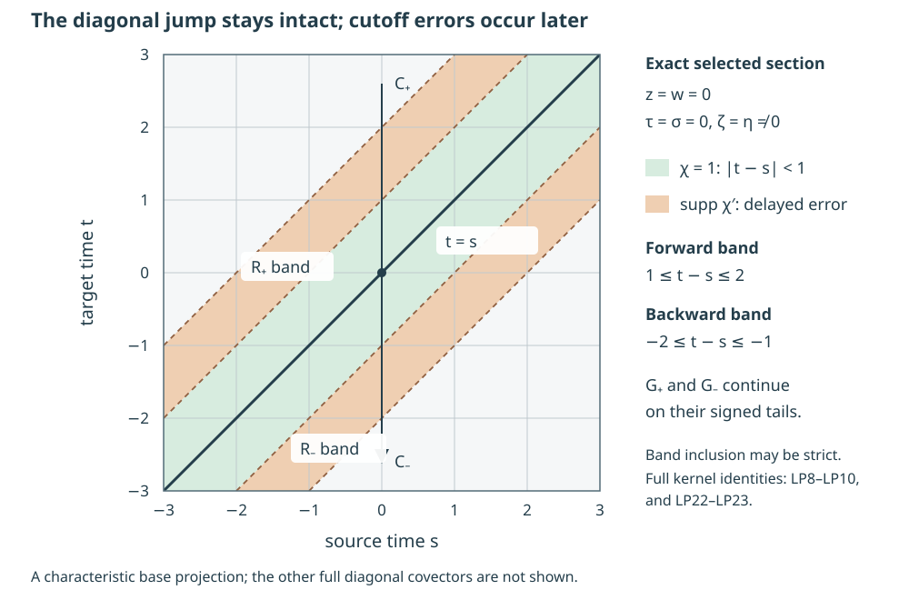

Local signed parametrices and their delayed errors
A signed inverse has two different singular structures. Its jump creates the identity on the diagonal; away from that diagonal, it transports singularities along one characteristic direction. We preserve the jump on a small canonical patch and place the cutoff error at a positive travel time from it. The error is then an ordinary Lagrangian distribution that can be treated by the directional kernel correction already proved.
The exact geometric input is Section 1 of Real and complex symplectic normal forms of functions. Sections 5–7 of Graph operators, continuity and Egorov, including GT1–GT17, supply every-real graph mapping, both graph inverses and removal of the entire ordinary lower-order symbol. Sections 1–2 of Singularities along a real characteristic direction prove the model kernels, every diagonal wavefront direction and their off-diagonal order. Sections 1–9 of Kernels, adjoints and clean composition supply the full kernel wavefront bound, proper smooth-kernel ideal and ordinary zero-excess composition with its symbol. We use those written proofs and give the receiving cutoff, cone and support arguments here.
Work with scalar half densities on an \(n\)-dimensional smooth manifold without boundary. Let \(P\in\Psi^1_{1,0}(X)\) be properly supported, with real homogeneous principal symbol \(p\) of degree one and arbitrary ordinary order-zero lower terms. Fix \(c\in T^*X\setminus0\) such that \[ p(c)=0,\qquad H_p(c)\text{ and }R(c)\text{ are independent}. \tag{LP1} \] The nonradial condition is essential; it also implies \(n\ge2\). All conclusions initially concern one smaller conic neighborhood of \(c\). When the global characteristic relation is used, we retain the precise real-principal-type and compact-return hypotheses of Global time and the bicharacteristic relation, Section 6. No global right-parametrix construction is assumed in this local lemma.
1. A cutoff depending on displacement preserves every real Sobolev scale
Use model coordinates \(x=(t,z)\), \(y=(s,w)\), with \(z,w\in\mathbb R^{n-1}\), and \(D_t=-i\partial_t\). The signed kernels are \[ E^0_+=iH(t-s)\delta(z-w),\qquad E^0_-=-iH(s-t)\delta(z-w),\qquad D_tE^0_\pm=I. \tag{LP2} \] The identity is an identity of half-density kernels in the standard product frame. Their reflected-input wavefronts have the full diagonal and the respective forward or backward flow part. In the latter, both time covectors vanish and the same nonzero transverse covector occurs at both endpoints.
Choose an even smooth function \(\chi_\varepsilon(d)\), equal to one for \( |d|\le\varepsilon/2\), supported in \( |d|\le\varepsilon\), and a smooth compactly supported \(\kappa_\varepsilon(r)\), equal to one for \( |r|\le\varepsilon/2\) and supported in \( |r|\le\varepsilon\). Define \[ \psi_\varepsilon(x,y)=\chi_\varepsilon(t-s)\kappa_\varepsilon(z-w), \qquad F^0_\pm=\psi_\varepsilon E^0_\pm. \tag{LP3} \] The support of \(\psi_\varepsilon\) is close to the diagonal, rather than compact in the two absolute base variables. It is identically one on a whole neighborhood of the diagonal. The kernels \(F^0_\pm\) are properly supported because their displacement belongs to a fixed compact set: over a compact input set, output points lie in its sum with that set of displacements, and the reverse projection has the same property.
Since the delta distribution sets \(z-w=0\), the transverse cutoff disappears from the actual kernel. The operator is convolution by the compact complex measure \[ \mu_+=i\chi_\varepsilon(d)H(d)\,dd\otimes\delta_0(dr),\qquad \mu_-=-i\chi_\varepsilon(d)H(-d)\,dd\otimes\delta_0(dr). \tag{LP4} \] Its total variation is finite. For a Schwartz function \(u\), Fourier transformation of the finite measure gives \(\widehat{F^0_\pm u}=\widehat\mu_\pm\widehat u\) and \[ |\widehat\mu_\pm(\tau,\zeta)|\le\|\mu_\pm\|_{\mathrm{TV}},\qquad \|F^0_\pm u\|_{H^a(\mathbb R^n)} \le\|\mu_\pm\|_{\mathrm{TV}}\|u\|_{H^a(\mathbb R^n)} \quad(a\in\mathbb R). \tag{LP5} \] Indeed multiply the pointwise Fourier inequality by \(\langle(\tau,\zeta)\rangle^{2a}\), integrate and take square roots. The weight is positive for every real \(a\); no interpolation restriction or endpoint loss occurs. Schwartz density in the weighted Fourier norm proves the unique bounded extension. Convolution with a compact measure acts continuously on distributions, by pairing against its compact translates of a test function; hence this extension agrees with the kernel action. The displacement support gives the same compact-support control on that extension.
The complete wavefront bound is \[ \operatorname{WF}'(F^0_\pm)\subset \Delta^*_0\cup C^0_\pm,\qquad C^0_\pm=\{(t,z,0,\zeta;s,z,0,\zeta): \zeta\ne0,\ \pm(t-s)>0\}. \tag{LP6} \] The characteristic diagonal is already part of \(\Delta^*_0\). The additional diagonal directions include \(\tau\ne0\). Therefore the full \(F^0_\pm\) is not being treated as an ordinary distribution associated only with \(C^0\).
2. The derivative error is strictly separated from the diagonal
The distributional product rule, with the sign in \(D_t\), gives \[ D_tF^0_\pm=I+R^0_\pm,\qquad R^0_\pm=(D_t\psi_\varepsilon)E^0_\pm. \tag{LP7} \] The identity multiplier is exactly one because \(\psi_\varepsilon(x,x)=1\). The derivative vanishes on a neighborhood of the diagonal. Its only contribution on \(z=w\) is the time derivative of \(\chi_\varepsilon\), so the complete kernels are \[ R^0_+=\chi'_\varepsilon(t-s)H(t-s)\delta(z-w),\qquad R^0_-=-\chi'_\varepsilon(t-s)H(s-t)\delta(z-w). \tag{LP8} \] Their signs differ before the two supports are taken into account. No delta distribution at \(t=s\) remains in either error.
On the positive derivative support \(\varepsilon/2\le t-s\le\varepsilon\), the Heaviside factor in \(R^0_+\) is smooth and equal to one. On the negative derivative support it vanishes. The reverse statement applies to \(R^0_-\). Consequently each kernel has a nondegenerate phase \( (z-w)\cdot\zeta\) and a smooth amplitude independent of \(\zeta\). There are \(n-1\) phase variables and \(2n\) base variables. Its ordinary Lagrangian order is \[ 0+\frac{n-1}{2}-\frac{2n}{4}=-\frac12, \qquad R^0_\pm\in I^{-1/2}(\mathbb R^n\times\mathbb R^n,(C^0)'). \tag{LP9} \] If an exact normalization is desired, writing the delta with prefactor \( (2\pi)^{-(n-1)}\) makes the normalized amplitude \( (2\pi)^{1/2}\chi'_\varepsilon H\), with the negative sign for the backward kernel. That constant follows by comparison with the course's prefactor \( (2\pi)^{-(2n+2(n-1))/4}\).
The actual full wavefront bound is \[ \operatorname{WF}'(R^0_\pm)\subset C^0_\pm\cap\{\varepsilon/2\le|t-s|\le\varepsilon\}. \tag{LP10} \] It is separated from the characteristic diagonal. Its closure has no zero endpoint covector, since both covectors are \( (0,\zeta)\) with the same \(\zeta\ne0\). If the cutoff derivative happens to vanish on part of the displayed band, the wavefront is correspondingly smaller; the band is an inclusion, not an assertion of equality.
The difference retains one ordinary class even at the characteristic diagonal: \[ F^0_+-F^0_-=i\chi_\varepsilon(t-s)\delta(z-w) \in I^{-1/2}((C^0)'). \tag{LP11} \] It is elliptic wherever \(\chi_\varepsilon(t-s)\ne0\), in particular near \(t=s\) on \(C^0\). Its normalized phase amplitude there is the nonzero constant \(i(2\pi)^{1/2}\). This ordinary statement applies to the difference; it does not discard the extra diagonal wavefront of either individual signed kernel.
3. Choose one cone before composing with the conjugation
The real homogeneous normal form gives a canonical map \(\gamma\) from a model cone about \( (0,e_n)\) to a cone about \(c\), with \(p\circ\gamma=\tau\). Choose the full lower-term conjugation with graph order zero. On matched smaller cones it supplies proper \(A,B\in I^0\), with relations the graph of \(\gamma\) and its inverse, and \[ AB-I,\quad BA-I,\quad BPA-D_t,\quad AD_tB-P \quad\text{microlocally smoothing}. \tag{LP12} \] Every ordinary lower term has already been removed in these identities. Principal-symbol Egorov alone would be insufficient for the calculation below.
Let \(V\) be an interior model cone where these identities hold, and choose \(W\Subset V\) on compact base and unit-covector slices. Take an order-zero proper \(T\) whose full microsupport is contained in \(\gamma(W)\), and whose kernel base support is compact in the retained original coordinate patch. A full symbol with interior base and angular cutoffs, a low-frequency cutoff and a kernel cutoff near the diagonal supplies such \(T\). Only this full microsupport containment is used; a condition just on the homogeneous principal coefficient would leave an uncontrolled lower-term tail.
There is one \(\varepsilon>0\) such that \[ \bigl(\Delta^*_0\cup C^0_+\cup C^0_-\bigr) \cap\{|x-y|\le 2\varepsilon\} \circ\overline W\ \subset V. \tag{LP13} \] Here the closure and distance are taken in the chosen compact base and normalized conic patch. To prove the assertion, the diagonal sends each covector to itself. In a flow pair, the transverse base and covector agree, both time covectors are zero, and the output time differs from the input time by at most \(2\varepsilon\). On the compact slice of \(\overline W\), the distance from its covectors to the complement of \(V\) is positive. Continuity of these time translations gives the asserted common \(\varepsilon\). A contradiction proof is equally explicit: a sequence of violations with \(\varepsilon_j\downarrow0\) has a convergent input subsequence in \(\overline W\); its matched output converges to the same covector, which lies inside \(V\). Homogeneity extends the inclusion from that slice to all positive radii.
Choose the displacement cutoff with this \(\varepsilon\). The wavefront mapping gives \[ \operatorname{WF}(BTu)\subset\overline W,\qquad \operatorname{WF}(F^0_\pm BTu)\subset V \quad(u\in\mathcal E'(X)). \tag{LP14} \] The corresponding kernel matching inclusion holds uniformly, not merely for a selected \(u\). All the relations have nonzero endpoints and all factors are proper. The full kernel product and its reflected matching bound therefore apply without an undefined trace or an uncut middle integral.
We also retain a useful defect. On the retained model input cone, \[ S=PA-AD_t =A(BPA-D_t)+(I-AB)PA \quad\text{is microlocally smoothing}. \tag{LP15} \] Proper interior graph cutoffs make all the relevant products defined. The inverse and conjugation defects in (LP12), together with the graph wavefront bound, show that the two summands have no matched singularity on that input cone. Every factor of \(S\) has graph wavefront with no zero endpoint. Thus composing \(S\) with the entire \(F^0_\pm BT\), whose model output lies in \(V\), gives an actual smooth kernel on the localized original base product. Cone separation controls this whole term, rather than just its action on one forcing-regular solution.
4. The local receiving construction
Define the actual properly supported kernels \[ F_\pm=AF^0_\pm BT. \tag{LP16} \] After the fixed local support cutoffs, their input and output base supports lie in compact subsets of the original coordinate patch. The input support is controlled by \(T\); properness of \(B\), the compact displacement support of \(F^0_\pm\), and properness of \(A\) successively control each output support. This also proves continuity on compactly supported distributions and on compact smooth inputs.
Their wavefronts satisfy \[ \operatorname{WF}'(F_\pm)\subset\Delta^*_X\cup C_\pm. \tag{LP17} \] Indeed the diagonal model matching becomes \(\gamma\circ\mathrm{id}\circ\gamma^{-1}\), followed by the diagonal relation of \(T\), hence the original diagonal. For the other matching, symplectic invariance and \(p\circ\gamma=\tau\) give \(\gamma_*\partial_t=H_p\). Therefore a positive or negative model time interval becomes exactly the corresponding original characteristic interval. Positivity of its direction is preserved. All unmatched or separated pieces are smooth by the full kernel estimate. Locally \(C_\pm\) denotes this flow germ; under the standing global hypotheses it is the already defined global signed relation restricted to the patch.
Compute the complete right residual, without dropping an ordinary lower term: \[ \begin{split} PF_\pm &=(PA-AD_t)F^0_\pm BT+A(D_tF^0_\pm)BT\\ &=T+AR^0_\pm BT+(ABT-T)+SF^0_\pm BT. \end{split} \tag{LP18} \] The last term is smooth by (LP13)–(LP15). The penultimate term is smooth because the full microsupport of \(T\) lies in the matched inverse cone. This uses the same proper separated-cone kernel argument and excludes all residual diagonal directions. Thus \[ PF_\pm=T+R_\pm,\qquad R_\pm\in I^{-1/2}(X\times X,C'),\qquad \operatorname{WF}'(R_\pm)\subset C_\pm. \tag{LP19} \] Here \(R_\pm\) is the exact difference \(PF_\pm-T\), including the smooth terms in (LP18). Smooth kernels belong to the displayed local ordinary class. Composition of \(R^0_\pm\) with either graph, or with the diagonal PDO \(T\), has excess zero: the graph determines its matched middle covector uniquely. The order is \(0-1/2+0+0=-1/2\). The strict sign follows from (LP10) and \(\gamma_*\partial_t=H_p\). In particular the error is microlocally smooth near every characteristic diagonal point in this retained normalized patch.
Likewise the exact difference obeys \[ F_+-F_-=A(F^0_+-F^0_-)BT\in I^{-1/2}(X\times X,C'). \tag{LP20} \] At a characteristic diagonal point where \(T\) is noncharacteristic, this difference is noncharacteristic. The compact matching fiber is a single point at each graph composition, so its symbol is the ordered product of the two invertible graph symbols, the nonzero model symbol in (LP11), and the symbol of \(T\), with the canonical nonzero Maslov and half-density identifications. There is no integral over a positive-dimensional fiber that could cancel it. On a smaller compact normalized cone, the inverse symbol bounds of \(A,B,T\) and the fixed nonzero model coefficient bound the inverse of this product in the required opposite ordinary symbol order. Changing any representative by one lower order preserves that bound at sufficiently large radius. This proves ordinary noncharacteristicity, rather than just pointwise nonvanishing of a putative homogeneous coefficient.
Finally, for every real \(a\), \[ F_\pm:H^a_{\mathrm{comp}}(X)\longrightarrow H^a_{\mathrm{loc}}(X) \quad\text{continuously}. \tag{LP21} \] Use the order-zero mapping of \(T,B,A\) and the exact measure estimate (LP5). Proper support keeps the intermediate distributions in common compact sets needed by the next graph estimate. For each compact input and output localization, the product of these four finite bounds is an actual bound in \(H^a\). Smooth approximation in the same compact sets identifies the resulting extension with the distributional kernel product. This is the precise normalized gain zero, including negative and noninteger orders.
5. An exact flat correction shows what happens beyond the local patch
For the unit-scale cutoff \(\chi=1\) on \( [-1,1]\), supported in \( [-2,2]\), keep the same flat \(D_t\) model on all of \(\mathbb R^n\). The local error has no wavefront at travel time zero. Solving its time equation with that initial section gives \[ \begin{split} G^0_+&=i(\chi(t-s)-1)H(t-s)\delta(z-w),\\ G^0_-&=-i(\chi(t-s)-1)H(s-t)\delta(z-w). \end{split} \tag{LP22} \] These distributions are ordinary \(I^{-1/2}((C^0)')\). Their coefficients vanish near \(t=s\), so their wavefronts are strictly forward or backward. Their signed tails continue beyond the compact displacement cutoff. Differentiating (LP22) gives exactly \(D_tG^0_\pm=R^0_\pm\), since the value \(\chi(0)-1=0\) eliminates the delta jump. Hence \[ F^0_\pm-G^0_\pm=E^0_\pm. \tag{LP23} \] The corrected inverse ceases to be properly supported on the entire time axis. For example one compact nonzero input with nonzero time integral has a constant forward tail for arbitrarily large output times. Its local distribution and Sobolev action is still defined. This is why the later global uniqueness proof uses a compact middle, rather than freely multiplying uncut inverse kernels.

The picture is the \((s,t)\) base projection for the exact unit-scale flat formulas (LP7)–(LP10), at \(z=w=0\), zero time covectors and one fixed \(\zeta\ne0\). Its coordinates are \(x=420+80s\), \(y=300-80t\). The characteristic diagonal is \(t=s\). The shaded bands \(1\le t-s\le2\) and \(-2\le t-s\le-1\) contain the respective residual wavefronts; the cutoff derivative may vanish at some points in a band. The pale regions \( |t-s|<1\) show the exact plateau where neither residual occurs. The full diagonal with nonzero time covectors is not represented by this selected characteristic section. The correction in (LP22) carries the corresponding signed tails beyond the outer cutoff lines. This original coordinate diagram accompanies complete kernel identities; it is not a global coordinate chart for a general manifold.
6. Exercises with complete solutions
1. The entire signed cutoff correction (introductory). For an even smooth \(\chi\) equal to one on \( [-1,1]\) and supported in \( [-2,2]\), compute \(D_tF^0_+\), \(D_tF^0_-\), their strict residuals and the two corrections with zero value at travel time zero. Verify the corrected kernels, their difference order and the loss of global proper support.
Solution. Direct differentiation gives \(D_t(i\chi H)=\chi\delta+\chi'H=\delta+\chi'H\), and \(D_t(-i\chi H(-d))=\delta-\chi'H(-d)\), where \(d=t-s\). Multiply by \(\delta(z-w)\) to obtain the complete \(n\)-dimensional identities (LP7)–(LP8). The forward residual is supported in \(1\le d\le2\), the backward one in \(-2\le d\le-1\), so both are conormal of order \(-1/2\) and have no characteristic diagonal wavefront.
For \(d>0\), the initial-value primitive of the forward coefficient is \(i\int_0^d\chi'(v)dv=i(\chi(d)-1)\). It vanishes for \(d<0\). For \(d<0\), the backward primitive is \(i\int_0^d-\chi'(v)dv=-i(\chi(d)-1)\); it vanishes for \(d>0\). These are exactly (LP22), including the oriented negative-time integral. The zero coefficients near zero prove that differentiation creates no additional delta. Subtracting yields \(iH(d)\delta(z-w)\) and \(-iH(-d)\delta(z-w)\). Their difference is \(i\delta(z-w)\), whose amplitude order zero, \(n-1\) phase variables and base dimension \(2n\) give \(-1/2\), with a nonzero symbol on all of \(C^0\).
Choose \(f(s,w)=b(s)h(w)\), where \(b,h\in C_c^\infty\), \(h\ne0\), and \(\int b\ne0\). For all \(t>\sup\operatorname{supp}b\), the forward inverse gives \(i(\int b)h(z)\). Thus the image of a compactly supported smooth input has noncompact output support; its kernel cannot have a proper output projection over that input compact. Reversing time proves the same for the backward inverse. The compact-displacement \(F^0_\pm\) were proper, so the correction is responsible for this necessary signed tail.
2. A cutoff in absolute output time loses a diagonal term (intermediate). Take a smooth compact \(a(t)\), equal to one near zero, and a smooth compact \(b(s)\) supported near \(s_0\) with \(a(s_0)\ne1\), \(b(s_0)\ne0\). Let \(T\) be multiplication by \(b(s)\), and set \(\widetilde F_+=a(t)E^0_+T\). Is \(D_t\widetilde F_+-T\) a residual with wavefront contained only in the strict forward flow relation?
Solution. The exact kernel is \(ia(t)H(t-s)b(s)\delta(z-w)\), and \[ D_t\widetilde F_+-T =(a(t)-1)b(s)\delta(t-s)\delta(z-w) +a'(t)H(t-s)b(s)\delta(z-w). \tag{LP24} \] The first term is a nonzero order-zero diagonal PDO near \( (s_0,z;s_0,z)\). Its reflected wavefront contains every nonzero diagonal covector there. Choose a covector with \(\tau\ne0\). In the difference coordinates, a localized delta term has a nonzero constant leading temporal Fourier coefficient. The locally bounded Heaviside coefficient in the second term has temporal Fourier decay \(O(|\tau|^{-1})\), by the same integration by parts used in the exact model wavefront proof. Localize the smooth sum coordinates at a fixed frequency with nonzero leading coefficient, and let the temporal frequency grow in the chosen diagonal cone. The delta term cannot cancel against that decreasing term. These covectors are outside the characteristic flow relation, whose time covectors are zero. Even at \(\tau=0,\zeta\ne0\), the error occurs at travel time zero and violates the strict relation: keep the temporal frequency large enough that its nonzero delta contribution dominates, then let the transverse frequency grow. Thus being one near a single output point is insufficient. A displacement cutoff is one at every matched diagonal point; alternatively an absolute cutoff requires the entire input microsupport to lie inside its plateau.
3. Arbitrary graph orders cancel exactly (advanced). Repeat the local construction with conjugating graph operators of orders \(\mu\) and \(-\mu\), for any real \(\mu\), retaining both inverse identities and the full conjugation. Determine the residual and difference orders and the every-real Sobolev action of \(F_\pm\).
Solution. Graph composition still has excess zero. In \(AR^0_\pm BT\), the orders add to \(\mu-1/2-\mu+0=-1/2\); the same sum applies to \(A(F^0_+-F^0_-)BT\). The separated cone proof for the smoothing terms uses their wavefronts and arbitrary finite orders, so it is unchanged. No order gain or loss is added by either graph factor.
For \(u\in H^a_{\mathrm{comp}}\), the exact sequence of scale mappings is \[ H^a\ \xrightarrow{T}\ H^a \ \xrightarrow{B}\ H^{a+\mu} \ \xrightarrow{F^0_\pm}\ H^{a+\mu} \ \xrightarrow{A}\ H^a. \tag{LP25} \] The graph theorem holds at every real order, and (LP5) holds at the real order \(a+\mu\). Properness keeps each intermediate support compact on the selected localizations. Multiplying the four norm bounds proves \(H^a_{\mathrm{comp}}\to H^a_{\mathrm{loc}}\), with no restriction on the sign of \(\mu\). The two graph orders cancel because each bound is used on its correct Sobolev scale.
7. The remaining global assembly
This proves the local signed construction, its exact strictly delayed residual, the ordinary difference and the normalized every-real Sobolev bound. To obtain global right parametrices, one must still construct a base-locally-finite conic PDO partition, control the supports of all local kernels, treat elliptic cones with their exact programme parametrix, sum the residuals with their closed strict wavefront bound, and apply the directional kernel correction. The compact-middle proof then supplies both identities by adjoints and same-sign comparison. Global noncharacteristicity of the difference, arbitrary-real-order reduction and disconnected characteristic sign choices also need their full receiving arguments. These are active substantive obligations; the full global theorem and the wider assigned course remain unfinished.
References and scope
Hörmander IV, Lemma 26.1.15 and the beginning of the final construction of Theorem 26.1.14, printed 71–72/PDF 82–83, supply the antecedents for the local construction and displacement-measure estimate. The exact complete programme proofs are cited at the beginning. The cutoff identities, one fixed cone selection, full defect calculation, complete support and scale arguments, solved examples and coordinate diagram are independently written.
Written by GPT-6.1 Sol (OpenAI), Ultra, October 2026. Original text and coordinate diagram: public domain \(CC0\).